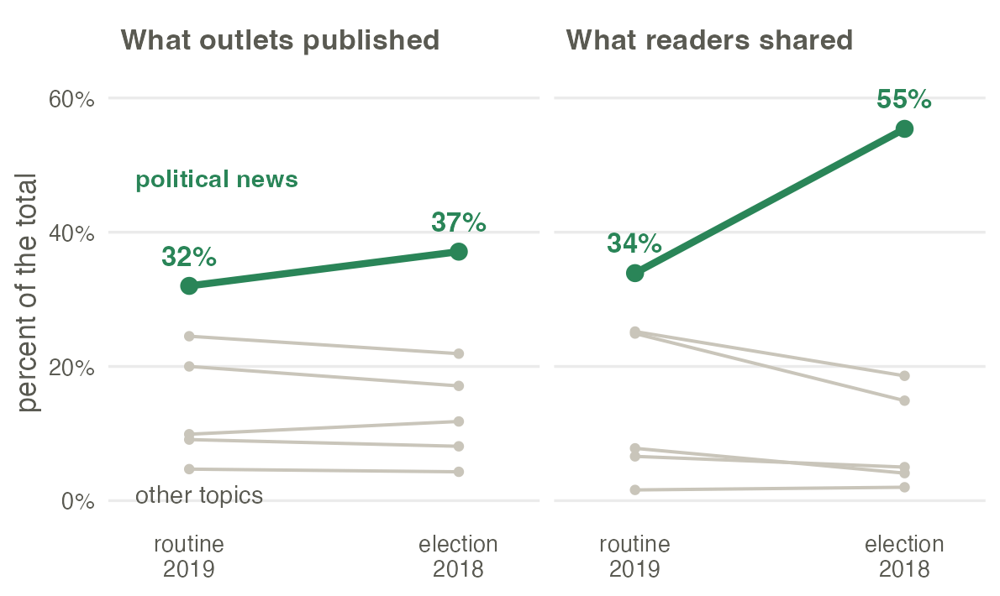
Week 3 · Lecture
Learning from labels:
classifiers, neural networks
& embeddings
Dr. Philipp K. Masur
Computational Analysis of Digital Communication · Vrije Universiteit Amsterdam
A machine that learns by doing
The Navy revealed the embryo of an electronic computer today that it expects will be able to walk, talk, see, write, reproduce itself and be conscious of its existence. […] Later perceptrons will be able to recognize people and call out their names and instantly translate speech in one language to speech and writing in another language, it was predicted.
The New York Times, 8 July 1958, on Frank Rosenblatt’s perceptron
Sixty-eight years later, the last sentence is true and the first is not. This lecture is about what the machine in between actually does.
New Navy device learns by doing: Psychologist shows embryo of computer designed to read and grow wiser. (1958, July 8). The New York Times, p. 25.
Last week ended here
- A dictionary is a vector of weights over the columns of the document–term matrix (+1, −1, 0), declared by you before the machine sees a text
- Against a hand-coded gold standard, no dictionary reached α = .35; the classifiers in the same paper reached .39 to .50, the humans .75 and up
- The list was not wrong about the words. It was wrong about the texts, and not good is the reason
- This week the weights are learned from labelled texts, and the result is scored against human coding exactly as the word list was
Same matrix, same validation. What changes is who writes the weights.
This lecture
I
Learning from labels
Inductive instead of deductive; the pipeline; what a model is for
II
Train, test, overfit
Why a model that fits perfectly is the one to distrust
III
A classifier, end to end
One tidymodels workflow from split to F1, then swap the algorithm
IV
Neural networks
The unit, the hidden layer, and how the weights are found
V
Word embeddings
Words as vectors; a representation the model did not have to learn
VI
Weeks 1 to 3 in one table
Where every method so far lands against the same gold standard
I · Learning from labels
Deductive and inductive
- A dictionary is deductive: the rule comes first (happy means positive), and the texts are read through it
- It is also deterministic: the same words produce the same score, however they are arranged
- A human coder does something else: reads the whole sentence, weighs the words against each other, decides in context
- Inductive approaches start from the coder’s decisions and let the machine work out which features of a text predict them
- The promise: the scalability of the dictionary with the validity of the coder (never quite kept, as Part VI shows)
Deductive: the researcher supplies the rules. Inductive: the researcher supplies examples, and the rules are inferred.
Four ways of assigning meaning
| Rule based | Unsupervised | Supervised | Pre-trained | |
|---|---|---|---|---|
| Logic | if word X occurs, the text means Y | these words form a pattern, which I think means X | X resembles texts labelled negative, so X is negative | the model treats X as it treats negative texts |
| Meaning assigned | by the researcher, in advance | by the researcher, afterwards | learned from the coded training set | by the model, from its own training |
| Example | dictionaries | topic models | Naive Bayes, SVM, neural networks | large language models |
| Week | 2 | — | 3 | 4 |
Today is the third column. The fourth is next week, and it is the third with the human coding moved somewhere you cannot see.
The pipeline with a classifier
A worked case
- de León, Vermeer and Trilling (2023): how do elections change what Mexican news outlets publish and what readers share on Facebook?
- 83,054 articles, far too many to code by hand. 2,000 were coded into six topics, and a support vector machine was trained on 80% of them and tested on the rest
- With precision and recall above .75 on every topic, it labelled the full sample
Two thousand coded, eighty-one thousand classified. The ratio is the method’s whole appeal, and the test on held-out articles is what makes it defensible.
de León, E., Vermeer, S., & Trilling, D. (2023). Electoral news sharing: A study of changes in news coverage and Facebook sharing behaviour during the 2018 Mexican elections. Information, Communication & Society, 26(6), 1193–1209. https://doi.org/10.1080/1369118X.2021.1994629 Figure drawn from their Table 1.
Statistical modelling: learn f
Output
(Intercept) x
4.042616 1.909887 - Fifty observations, one predictor, one outcome: the model is a line, y = a + b·x
- Fitting finds the a and b that make the line pass closest to the points
- The regression reading: at x = 0 the line is at 4.0, and one unit more x gives 1.9 units more y
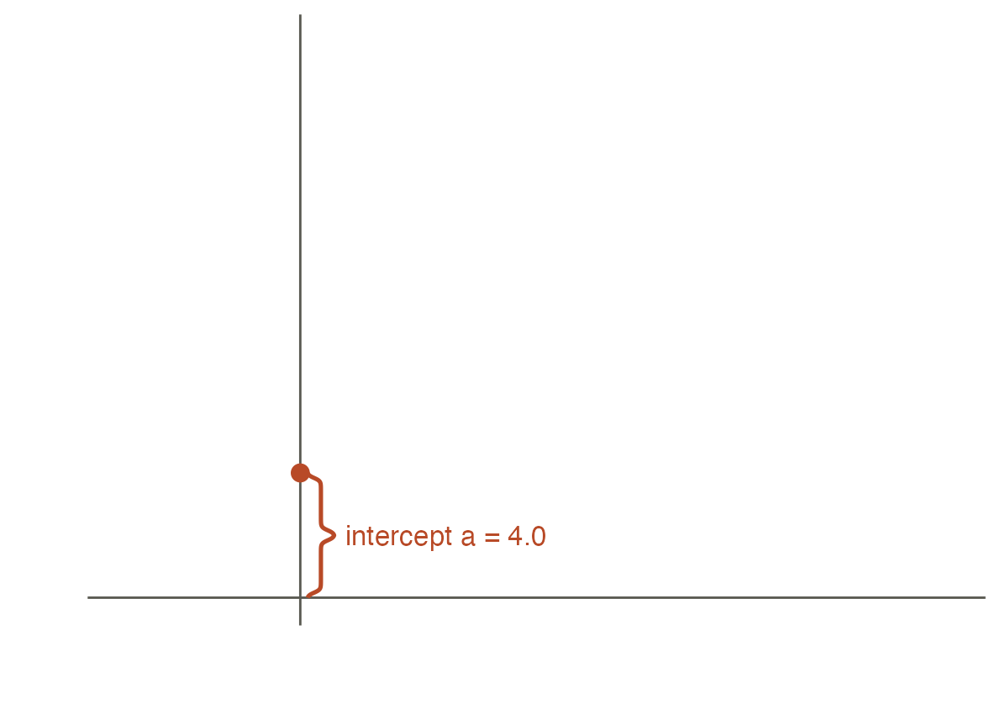
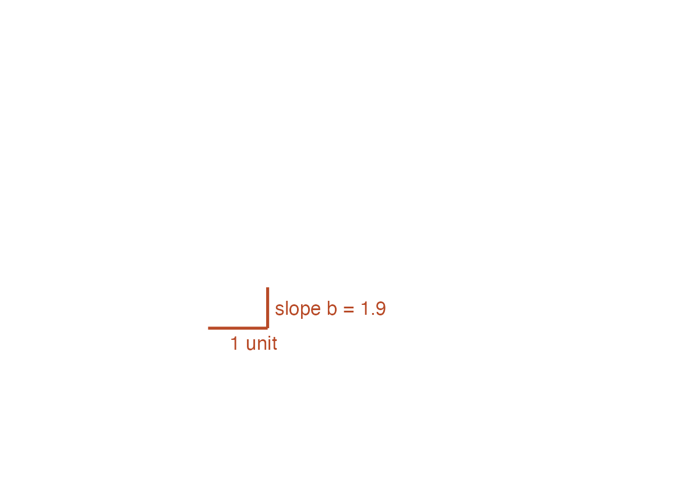
Prediction: use f on an x you never saw
Output
1 2
2.132729 13.592050 - No observation has x = −1 or x = 5, but a y is returned for each anyway
- Machine learning is this second use, taken seriously: fit on what you have, predict what you do not
- The line stays the same; you ask it a different question

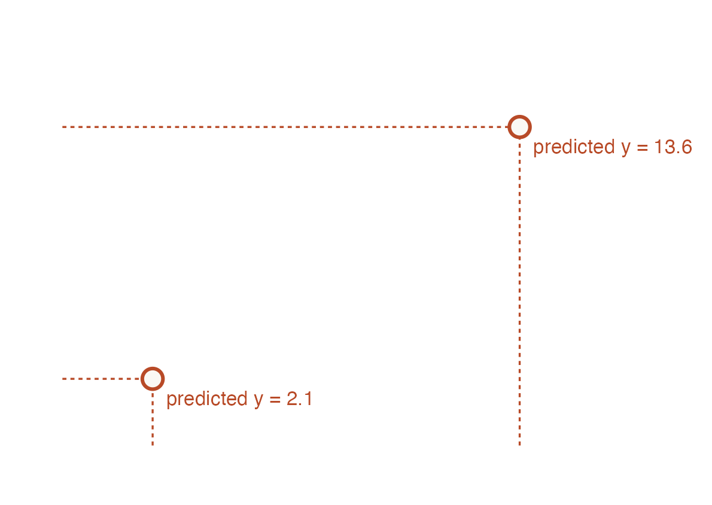
Two vocabularies for one thing
| Machine learning says | Statistics says |
|---|---|
| feature | independent variable, predictor |
| label | dependent variable, outcome |
| labelled data set | a data set with both |
| to train a model | to estimate, to fit |
| classifier | a model for a nominal outcome |
| to annotate | to code, by hand |
| training and test set | the sample, and the data you never have |
The last row is the real difference: statistics rarely holds data back to check its own predictions. Machine learning always does.
van Atteveldt, W., Trilling, D., & Arcíla Calderón, C. (2022). Computational analysis of communication. Wiley. Chapter 8.
Two goals, and what each gives up
Explaining
- Explaining is what statistics is about
- Does X relate to Y, in the population?
- Few predictors, so each coefficient can be read and defended
- The parameters are the result
Predicting
- Predicting is what text classification and machine learning are about
- How well can Y be guessed from what we have?
- Thousands of predictors, most of them collinear; nobody reports them
- The predictions are the result; the parameters are a means
In this course the classifier’s output becomes a variable in a study. Its job is to predict; the explaining happens afterwards, with the variable it produced.
II · Train, test, overfit
Fifteen points
- Simulated, so the truth is known: y is x cubed plus noise
- The next three slides fit three models to these fifteen points and ask which one to trust
- The Playground’s How much freedom is too much is this simulation with a slider
A line: too little freedom
- Two parameters. The line misses the curve systematically: too high on the left, too low on the right
- Underfitting: the model is too simple for the pattern in the data
- The errors are large on the training data already, and would be on new data too
A ninth-degree polynomial: too much
- Ten parameters for fifteen points. The curve visits every observation, noise included
- Overfitting: the model has learned the sample, not the process
- Its training error is nearly zero. Ask what it would predict for x = 6.5
A cubic: about right
- Four parameters, and the shape of the process that made the data
- Misses individual points, follows the curve: the errors that remain are the noise
- In a real problem nobody tells you the degree. Something has to stand in for knowing the truth
What stands in for the truth: data the model never saw
- Let the three models predict 200 fresh points from the same process
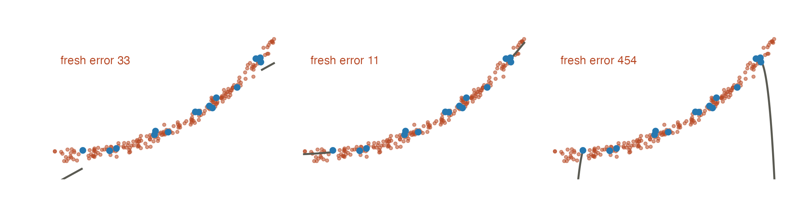
You will never have the fresh two hundred. So you make them: hold part of your labelled data back before you fit anything.
Hold part back
Other designs
Testing is validation
- The test set carries the human labels. Scoring the model on it is exactly last week’s comparison of an instrument with a gold standard
- Same confusion matrix, same accuracy, precision, recall, F1 and κ, per class, with the base rate beside them
- The only new thing: the labels the model is scored on were not used to build it. Last week that was automatic, because nobody trains a dictionary
- Report the test-set score, the size of the test set, and the class frequencies; without them nobody can judge the score
Everything in Part III of last week applies unchanged; only the instrument is new.
III · A classifier, end to end
Three abstracts: which discipline?
arXiv preprint
Reversible temperature exchange upon thermal contact
Abstract. According to a well-known principle of thermodynamics, the transfer of heat between two bodies is reversible when their temperatures are infinitesimally close. As we demonstrate, a little-known alternative exists: two bodies with temperatures different by an arbitrary amount can completely exchange their temperatures in a reversible way if split into infinitesimal parts that are brought into thermal contact sequentially.
physics
arXiv preprint
Singing Style Transfer Using Cycle-Consistent Boundary Equilibrium Generative Adversarial Networks
Abstract. Can we make a famous rap singer like Eminem sing whatever our favorite song? Singing style transfer attempts to make this possible, by replacing the vocal of a song from the source singer to the target singer. This paper presents a method that learns from unpaired data for singing style transfer using generative adversarial networks.
computer science
arXiv preprint
Adversarial Attacks and Defences Competition
Abstract. To accelerate research on adversarial examples and robustness of machine learning classifiers, Google Brain organized a NIPS 2017 competition that encouraged researchers to develop new methods to generate adversarial examples as well as to develop new ways to defend against them. In this chapter, we describe the structure and organization of the competition and the solutions developed by several of the top-placing teams.
statistics
The data: 5,250 abstracts, three disciplines
- Titles and abstracts of arXiv papers, labelled by the section they were submitted to
- The task: predict the discipline from the words, a proxy for any topic classification you would do on news or parliamentary speech
- 1,750 per class, so class imbalance is not in the way today; it will be in yours
Output
# A tibble: 5,250 × 3
label title text
<fct> <chr> <chr>
1 computer science Deep Learning Micro... Deep Learning M...
2 statistics The Reduced PC-Algo... The Reduced PC-...
3 computer science Critique of Barbosa... Critique of Bar...
4 physics Gate-error analysis... Gate-error anal...
5 statistics On synthetic data w... On synthetic da...
# ℹ 5,245 more rows# A tibble: 3 × 2
label n
<fct> <int>
1 computer science 1750
2 physics 1750
3 statistics 1750Abstracts from arXiv.org, labelled by primary category; compiled for the 2024 edition of this course. Licence: arXiv non-exclusive distribution.
The workflow
split
initial_split()
hold part back
recipe
recipe()
from text to features
model
multinom_reg()
which algorithm, which settings
workflow
workflow()
recipe and model, as one object
fit
fit()
on the training data
predict
predict()
on the test data
evaluate
conf_mat()
against the test labels
- The next slides take these seven steps one at a time; the row of chips above each slide shows where we are
- Together they are steps 02 to 04 of the pipeline, written as code
The recipe, the model and the workflow are objects you can print, share and reuse. Swapping the algorithm changes one of them.
Kuhn, M., & Silge, J. (2022). Tidy modeling with R. O’Reilly. https://www.tmwr.org
Split first
splitrecipemodelworkflowfitpredictevaluate
Output
# A tibble: 2 × 2
set n
<chr> <int>
1 training 4200
2 test 1050# A tibble: 3 × 2
label n
<fct> <int>
1 computer science 350
2 physics 350
3 statistics 350- Nothing below this slide touches
test_datauntil the confusion matrix - One thousand and fifty held-out abstracts: the fresh two hundred, made real
The recipe
splitrecipemodelworkflowfitpredictevaluate
rec <- recipe(label ~ text, data = train_data) |> # predict label from text
step_tokenize(text) |> # 1 · words
step_stopwords(text) |> # 2 · drop the grammar
step_tokenfilter(text, min_times = 20, # 3 · the 1,000 most frequent
max_tokens = 1000) |> # words seen 20+ times
step_tf(text) # 4 · the document–term matrix
baked <- rec |> prep() |> bake(new_data = NULL)
baked |> select(label, tf_text_data, tf_text_quantum) |> print(n = 5)Output
# A tibble: 4,200 × 3
label tf_text_data tf_text_quantum
<fct> <int> <int>
1 computer science 0 0
2 computer science 0 0
3 computer science 0 0
4 computer science 1 0
5 computer science 0 0
# ℹ 4,195 more rows- A recipe writes the preprocessing down before it runs: learned on the training data, applied unchanged to the test data
- Steps 1 and 2 are the tokens and stop words of weeks 1 and 2; step 3 is week 2’s trimming, and 1,000 columns is a hyperparameter
prep()learns the vocabulary,bake()applies it: 4,200 rows, one column per kept word
Specify and fit
splitrecipemodelworkflowfitpredictevaluate
logit_spec <- multinom_reg(penalty = 0.01, # shrink the weights ...
mixture = 1) |> # ... lasso: many go to zero
set_engine("glmnet") |> # the R package that fits it
set_mode("classification")
logit_wf <- workflow() |>
add_recipe(rec) |> # the recipe from before
add_model(logit_spec) # the model from above
m_logit <- fit(logit_wf, data = train_data)recis the recipe from the last four slides, unchanged. The workflow binds it to the model- Logistic regression for three classes: a weight per word per class, summed and turned into three probabilities
- The penalty is the answer to Part II: it punishes large weights, so a thousand features cannot memorise 4,200 abstracts
Fitting took 11 seconds on this laptop.
The confusion matrix, three by three
splitrecipemodelworkflowfitpredictevaluate
- The model has never seen these 1,050 abstracts. Rows are the truth, columns the verdict; the diagonal is what it got right
- The errors sit between statistics and computer science: model, data, learning belong to both
Every off-diagonal cell is a pair of disciplines that share a vocabulary. The matrix shows how often the model fails and where the construct is fuzzy.
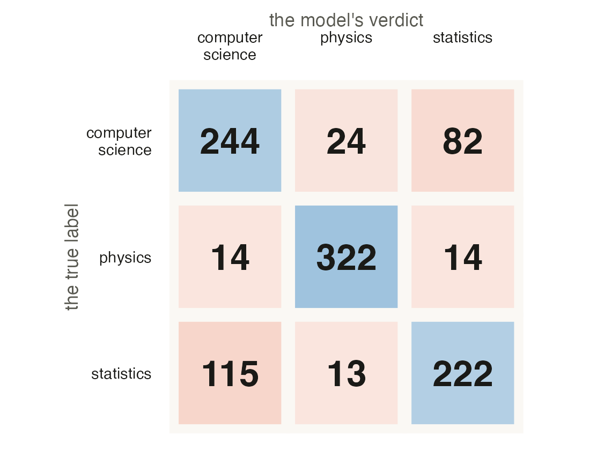
The numbers you report
splitrecipemodelworkflowfitpredictevaluate
- Three classes, so precision and recall are averaged: macro by default, every class counting equally
- Per class, the model finds 92% of the physics abstracts but only 70% of computer science and 63% of statistics. The average hides which construct it cannot separate
Output
# A tibble: 4 × 3
.metric .estimator .estimate
<chr> <chr> <dbl>
1 accuracy multiclass 0.750
2 precision macro 0.750
3 recall macro 0.750
4 f_meas macro 0.749# A tibble: 3 × 4
label .metric .estimator .estimate
<fct> <chr> <chr> <dbl>
1 computer science accuracy multiclass 0.697
2 physics accuracy multiclass 0.92
3 statistics accuracy multiclass 0.634Three abstracts in four, on texts the model never saw. Whether that is good depends on what an error costs in the study.
What the model gets wrong
splitrecipemodelworkflowfitpredictevaluate
arXiv preprint
Comparative Study of Virtual Machines and Containers for DevOps Developers
Abstract. In this work, we plan to develop a system to compare virtual machines with container technology. We would devise ways to measure the administrator effort of containers vs. Virtual Machines (VMs). Metrics that will be tested against include human efforts required, ease of migration, resource utilization and ease of use using containers and virtual machines.
filed under: computer science
the model: physics
arXiv preprint
TherML: Thermodynamics of Machine Learning
Abstract. In this work we offer a framework for reasoning about a wide class of existing objectives in machine learning. We develop a formal correspondence between this work and thermodynamics and discuss its implications.
filed under: statistics
the model: computer science
arXiv preprint
On the generation of the quarks through spontaneous symmetry breaking
Abstract. In this paper we present the state of the art about the quarks: group SU(3), Lie algebra, the electric charge and mass. The quarks masses are generated in the same way as the lepton masses. It is constructed a term in the Lagrangian that couples the Higgs doublet to the fermion fields.
filed under: physics
the model: computer science
Every number on the last two slides is made of cases like these. Read some before you report the score.
Swap the algorithm: one object changes
splitrecipemodelworkflowfitpredictevaluate
library(discrim)
nb_spec <- naive_Bayes(Laplace = 1) |> # add one to every count
set_engine("naivebayes", usepoisson = TRUE) |> # the inputs are counts
set_mode("classification")
nb_wf <- workflow() |>
add_recipe(rec) |> # the same recipe
add_model(nb_spec) # a different model
m_nb <- fit(nb_wf, data = train_data)
pred_nb <- predict(m_nb, new_data = test_data) |>
bind_cols(test_data |> select(id, label))- Naive Bayes is a dictionary the data wrote: a weight per word and class, from the counts
- The recipe, the split and the metrics are untouched: only the model specification is new
The dictionary it wrote: each class’s most distinctive words
| computer science | physics | statistics |
|---|---|---|
| robot | planets | nonparametric |
| speech | orbital | gene |
| communication | redshift | multivariate |
| social | stellar | regression |
| mobile | fermi | likelihood |
| language | spin | estimators |
| web | stars | bayesian |
Swap again: a support vector machine
splitrecipemodelworkflowfitpredictevaluate
rec_norm <- rec |>
step_normalize(all_predictors()) # SVMs want scaled inputs
svm_wf <- workflow() |>
add_recipe(rec_norm) |> # the recipe, plus one step
add_model(svm_linear() |> # a different model
set_engine("LiblineaR") |>
set_mode("classification"))
m_svm <- fit(svm_wf, data = train_data)
pred_svm <- predict(m_svm, new_data = test_data) |>
bind_cols(test_data |> select(id, label))- The recipe gains one step, because an SVM wants scaled inputs; the split and the metrics are untouched
- A linear support vector machine draws the widest-margin boundary through the thousand-dimensional space of word counts
- This is what the workflow buys: the comparison is fair, because everything else is held fixed
Three algorithms, one test set
splitrecipemodelworkflowfitpredictevaluate
accuracy_on <- function(model, data) {
predict(model, new_data = data) |>
bind_cols(select(data, label)) |>
accuracy(truth = label, estimate = .pred_class) |>
pull(.estimate)
}
models <- list(`logistic regression` = m_logit,
`Naive Bayes` = m_nb, `linear SVM` = m_svm)
tibble(model = names(models),
training = map_dbl(models, accuracy_on, train_data),
test = map_dbl(models, accuracy_on, test_data)) |>
pivot_longer(-model, names_to = "set", values_to = "accuracy") |>
ggplot(aes(accuracy, model, colour = set)) +
geom_point(size = 4)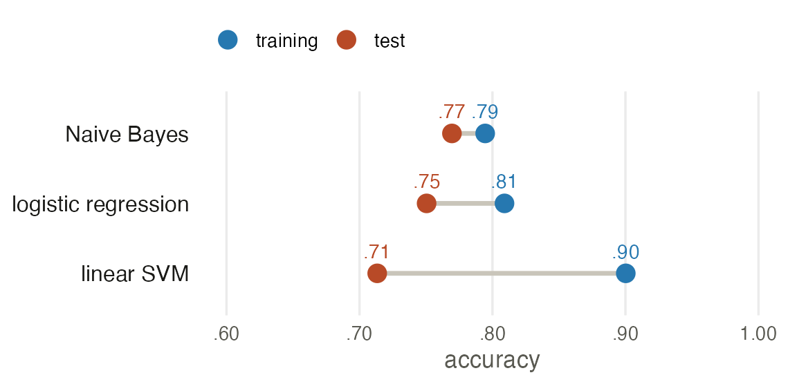
- The SVM fits its training abstracts best and the test abstracts worst: Part II’s ninth-degree polynomial, on real data
Training accuracy favours the most flexible model. The ranking that counts comes from the test set, the same one for all three.
Which algorithm?
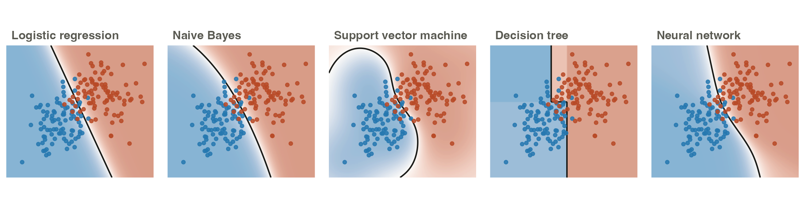
The three you just ran, plus a tree and a network, on the same 180 points. The line is where the verdict flips; the tint is how sure the model is.
Each model draws its boundary in a different shape. Text has a thousand features instead of two: the same picture, impossible to draw.
Which algorithm, in words
| Algorithm | The rule it learns | Strong when | Weak when |
|---|---|---|---|
| Logistic regression | one weight per word, summed | many features; readable weights | meaning lies in combinations |
| Naive Bayes | word rates per class, multiplied | little data; a fast baseline | words are correlated |
| Support vector machine | the widest-margin boundary | sparse, high-dimensional text | you need probabilities |
| Decision tree | yes/no questions on words | mixed feature types | text: brittle, overfits |
| Neural network | weighted sums, stacked, non-linear | combinations matter; lots of data | little data; nothing readable |
For a bag of words, start with Naive Bayes, then try a regularised logistic regression or a linear SVM.
Hvitfeldt, E., & Silge, J. (2021). Supervised machine learning for text analysis in R. CRC Press. https://smltar.com — Chapters 6–7.
IV · Neural networks
Sixty-eight years of one idea
From the neuron to the unit
- A biological neuron sums the signals it receives and fires once a threshold is passed. That is where the analogy starts and ends
- The artificial unit (McCulloch & Pitts, 1943; Rosenblatt, 1958): each input x is multiplied by a weight w, the products are summed, a bias is added, and an activation function turns the sum into an output
- Written out: output = f(w1x1 + w2x2 + … + b): the same weighted sum as last week’s word list, drawn on the right
- A network stacks units in layers: the outputs of one layer are the inputs of the next; a unit only talks to the layer before and the layer after
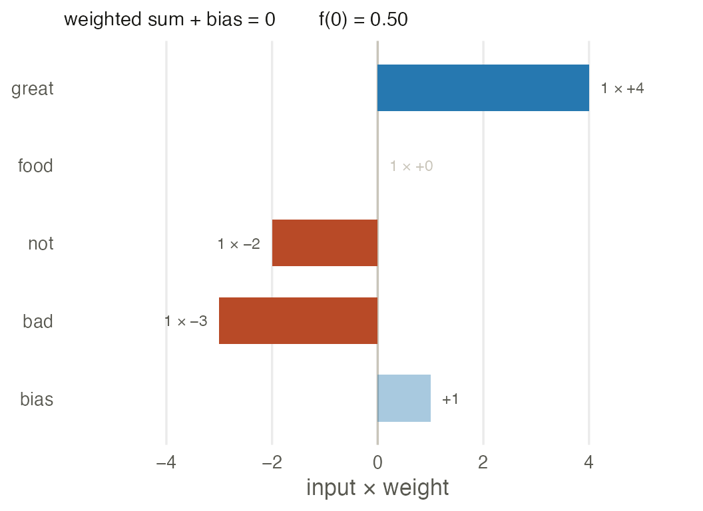
one review, one unit
One unit is a regression. A network is regressions whose inputs are other regressions, and that is the only difference.
Rosenblatt, F. (1958). The perceptron: A probabilistic model for information storage and organization in the brain. Psychological Review, 65(6), 386–408. https://doi.org/10.1037/h0042519
The activation function
- Without it, a stack of weighted sums is one weighted sum: the hidden layer would add nothing
- The logistic curve squashes any sum into (0, 1), a probability: with it, one unit is a logistic regression
- tanh has the same S-shape between −1 and +1; the network on the next slide uses it inside
- ReLU, zero below zero and the sum itself above, is the workhorse inside large modern networks
The network, taken apart
What a hidden unit can see that a list cannot
- A dictionary gives good +1 whatever stands in front of it; Naive Bayes gives good one learned weight, and the same problem
- A hidden unit can learn a weight on not and a weight on good and fire only when both are present: a combination, not a sum
- Not good at all is the first text in this course that a model gets right without being told the rule
- The cheap alternative from week 1 still stands: put not good in the matrix as a bigram, and the list works again. The network learns the bigram; the tokeniser declares it
This is the specific thing the hidden layer buys: features made of features. Next week’s models do this with many layers, at scale.
Other ways to wire the units
All of them are units with weights, trained the same way, by backpropagation. What differs is how the units are wired.
Fitting a network with tidymodels
splitrecipemodelworkflowfitpredictevaluate
nn_spec <- mlp(hidden_units = 16, # one hidden layer, 16 units
epochs = 100, # passes over the training set
learn_rate = 0.1, # the step size
penalty = 0.01) |> # the brake on the weights
set_engine("brulee") |> # torch, inside R
set_mode("classification")
nn_wf <- workflow() |>
add_recipe(rec_norm) |> # scaled inputs, as for the SVM
add_model(nn_spec)
set.seed(42) # the random starting weights
m_nn <- fit(nn_wf, data = train_data)
pred_nn <- predict(m_nn, new_data = test_data) |>
bind_cols(test_data |> select(id, label))- A multilayer perceptron: 1,000 inputs, 16 hidden units, 3 outputs (about sixteen thousand weights)
- Every number in the specification is a hyperparameter; none has a right value in advance
- The seed matters now in two places: the split, and the random initial weights
Fitting took 2 seconds. The recipe, the split and the metrics did not change.
Kuhn, M., & Falbel, D. (2023). brulee: High-level modeling functions with torch (R package). https://CRAN.R-project.org/package=brulee
Four algorithms, one test set
splitrecipemodelworkflowfitpredictevaluate
- On the test set the network lands among the three models from Part III
- On its own training abstracts it reaches .92, the widest gap of the four: sixteen thousand weights for 4,200 abstracts
- Where a network pays off is when the input carries structure worth combining, and that is what the next part changes
The representation limits the score more than the algorithm.
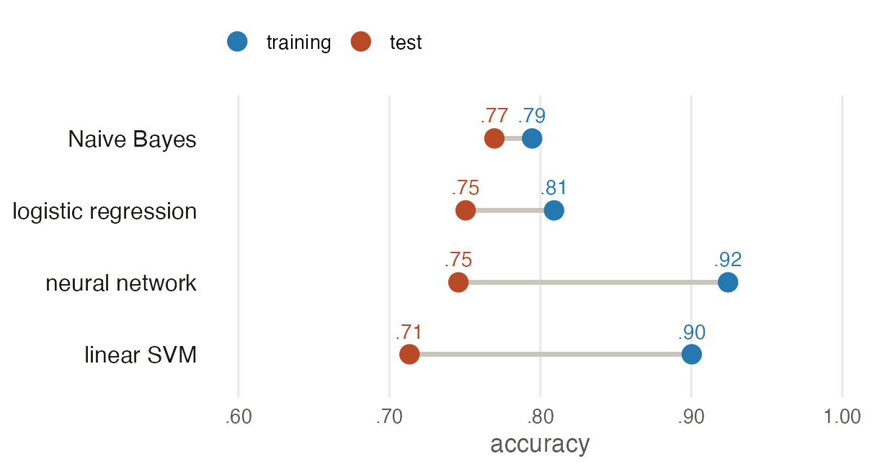
V · Word embeddings
From text to numbers, again
What a bag of words cannot see
- Every model so far took the document–term matrix as its input: one column per word, and every column a stranger to every other
- fantastic and great share nothing in that matrix. A model that learned great from the training set knows nothing about a test abstract that says fantastic
- The matrix is sparse (94 cells in 100 were zero last week) and wide: a thousand columns for a thousand words, and the 1,001st word gets none
- Word order is gone, and with it not good; the hidden unit could only rebuild it because both words survived the cut
The representation throws away similarity between words before the model ever sees them. So the fix goes into the representation.
Words as vectors
Where the numbers come from
- The distributional hypothesis (Firth, 1957): a word is characterised by the company it keeps
- An embedding gives each word k numbers, learned from the text alone, so that words used in similar contexts get similar numbers
- GloVe (2014) fits them to a corpus’s co-occurrence counts; word2vec (2013) trains a shallow network to predict a word from its neighbours
Output
# A tibble: 3 × 7
word d1 d2 d3 d4 d5 d6
<chr> <dbl> <dbl> <dbl> <dbl> <dbl> <dbl>
1 king 0.505 0.686 -0.595 -0.0228 0.600 -0.135
2 queen 0.379 1.82 -1.26 -0.104 0.358 0.600
3 pizza 0.621 -0.496 -0.696 0.195 1.06 0.142[1] 10000 51- Ten thousand words, fifty numbers each, from six billion tokens of Wikipedia and news. No column means anything on its own
Mikolov, T., Chen, K., Corrado, G., & Dean, J. (2013). Efficient estimation of word representations in vector space. arXiv. https://doi.org/10.48550/arXiv.1301.3781
Pennington, J., Socher, R., & Manning, C. D. (2014). GloVe: Global vectors for word representation. Proceedings of EMNLP 2014, 1532–1543. https://doi.org/10.3115/v1/D14-1162
How close are two words?
- Every word is an arrow. Two words are similar when their arrows point the same way
- Cosine similarity measures that angle: 1 for the same direction, 0 for a right angle
- The length of an arrow plays no part, so a frequent word does not win by being long
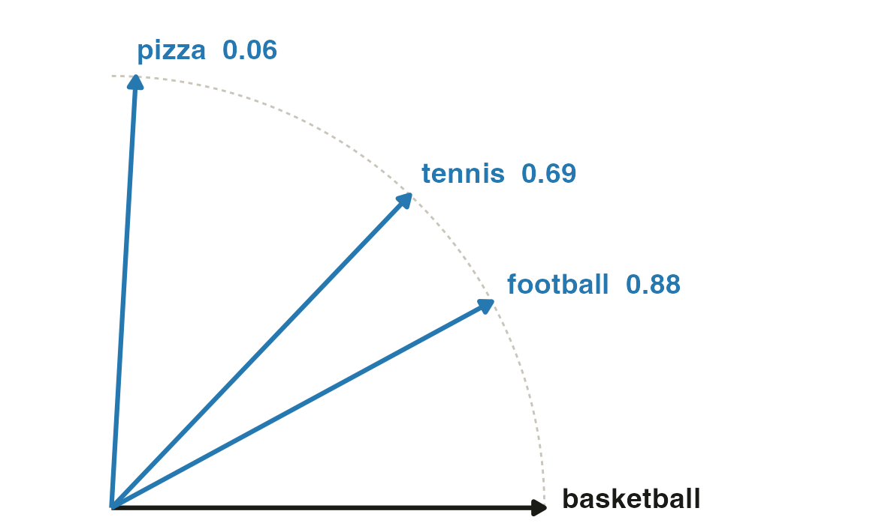
Football points almost the same way as basketball; pizza is nearly at a right angle. The neighbour lists on the next slide are sorted by this number.
Neighbours
wv <- as.matrix(glove[-1]); rownames(wv) <- glove$word
wv <- wv / sqrt(rowSums(wv^2)) # unit length: dot product = cosine
nearest <- function(target, n = 6) {
sims <- wv %*% target # cosine with every word at once
tibble(word = rownames(wv), similarity = sims[, 1]) |>
arrange(-similarity) |> slice_head(n = n)
}
nearest(wv["basketball", ])
nearest(wv["netherlands", ])nearest()sorts every word by its cosine with the target- Nobody told the vectors that Belgium is near the Netherlands. Six billion tokens of context did
Output
# A tibble: 6 × 2
word similarity
<chr> <dbl>
1 basketball 1
2 football 0.88
3 baseball 0.86
4 hockey 0.86
5 nba 0.84
6 soccer 0.82# A tibble: 6 × 2
word similarity
<chr> <dbl>
1 netherlands 1
2 belgium 0.89
3 switzerland 0.82
4 denmark 0.81
5 france 0.79
6 sweden 0.79Arithmetic
- The famous demonstration, with its thumb on the scale in view: without the filter, king itself is the nearest word
- The second line is the same arithmetic, and the answer is a measurement of the corpus, not of medicine
Output
# A tibble: 4 × 2
word similarity
<chr> <dbl>
1 queen 0.85
2 throne 0.76
3 prince 0.75
4 daughter 0.74# A tibble: 4 × 2
word similarity
<chr> <dbl>
1 nurse 0.94
2 child 0.86
3 pregnant 0.85
4 mother 0.84Embeddings inherit the regularities of the text they were trained on: the useful ones and the ones a study would call bias.
Bolukbasi, T., Chang, K.-W., Zou, J., Saligrama, V., & Kalai, A. (2016). Man is to computer programmer as woman is to homemaker? Debiasing word embeddings. Advances in Neural Information Processing Systems, 29.
Embeddings as the object of study
- Andrich, Bachl and Domahidi (2023): are US politicians described in gender-stereotyped terms in the news?
- Five million news stories, 2010 to 2020; word2vec trained on them, with each of 1,095 politicians as a token of their own
- The measure is a cosine: how close is a politician’s vector to words such as competent, honest or caring?
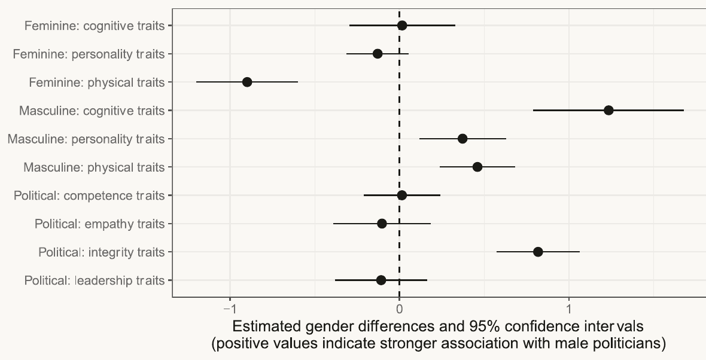
Right of the dashed line: closer to male politicians. Masculine traits and integrity sit closer to men, physical feminine traits closer to women. Most other traits show no difference.
No classifier, no labels: the geometry of the space is the finding. The validation question is whether the geometry measures the construct.
Andrich, A., Bachl, M., & Domahidi, E. (2023). Goodbye, gender stereotypes? Trait attributions to politicians in 11 years of news coverage. Journalism & Mass Communication Quarterly, 100(3), 473–497. https://doi.org/10.1177/10776990221142248 Figure 2, cropped (CC BY-NC 4.0).
From words to sentences
movies <- c("This movie is great, I loved it.",
"The film was fantastic, a real treat!",
"I did not like this movie, it was not great.",
"Today, I went to the cinema and watched a movie.",
"I had pizza for lunch.",
"Sometimes, when I read a book, I get completely lost.")
# a sentence-embedding model, run locally through Ollama
emb <- request("http://localhost:11434/api/embed") |>
req_body_json(list(model = "nomic-embed-text", input = movies)) |>
req_perform() |> resp_body_json()
E <- do.call(rbind, lapply(emb$embeddings, unlist)) # 6 × 768
E <- E / sqrt(rowSums(E^2))
tibble(sentence = movies, similarity_to_2 = as.numeric(E %*% E[2, ])) |>
ggplot(aes(similarity_to_2, reorder(sentence, similarity_to_2))) +
geom_col()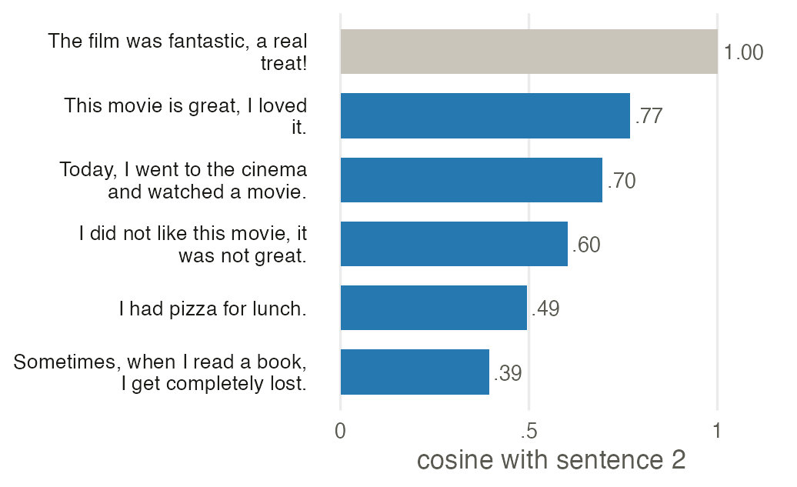
- great and fantastic make the nearest pair: different words, similar meaning. The negated sentence is further away than the cinema trip
Averaged word vectors put sentences 1 and 3 almost on the same point. A model that reads the sentence does not.
The pipeline with embeddings
A classifier on embeddings
splitrecipemodelworkflowfitpredictevaluate
Word embeddings: fifty numbers
rec_glove <- recipe(label ~ text, data = train_data) |>
step_tokenize(text) |>
step_word_embeddings(text, embeddings = glove,
aggregation = "mean") # mean per abstract
glove_wf <- workflow() |>
add_recipe(rec_glove) |>
add_model(logit_spec) # Part III's model
m_glove <- fit(glove_wf, data = train_data)
pred_glove <- predict(m_glove, new_data = test_data) |>
bind_cols(test_data |> select(id, label))Sentence embeddings: 768 numbers
# the request from two slides ago, in batches of 32
emb <- ollama_embed(science$text) # 5,250 × 768
emb_tbl <- as_tibble(emb,
.name_repair = ~ paste0("e", seq_along(.x))) |>
mutate(id = science$id)
train_emb <- train_data |> select(id, label) |>
left_join(emb_tbl, by = "id")
test_emb <- test_data |> select(id, label) |>
left_join(emb_tbl, by = "id")
m_sent <- fit(logit_spec, label ~ . - id, # Part III's model
data = train_emb)
pred_sent <- predict(m_sent, test_emb) |>
bind_cols(test_emb |> select(id, label))The same logistic regression both times. Only what it reads has changed.
Six models, one test set
- The mean of fifty-dimensional word vectors scores below all the bag-of-words models: averaging two hundred words into one point blurs the abstract
- The sentence-embedding model comes first: a representation trained to keep what a text means, fed to the same regression
- The same 1,050 abstracts for all six rows. Every comparison in this course follows that rule
Four algorithms on the same word counts span 6 points of accuracy. Changing what one logistic regression reads moves it from .69 to .80.
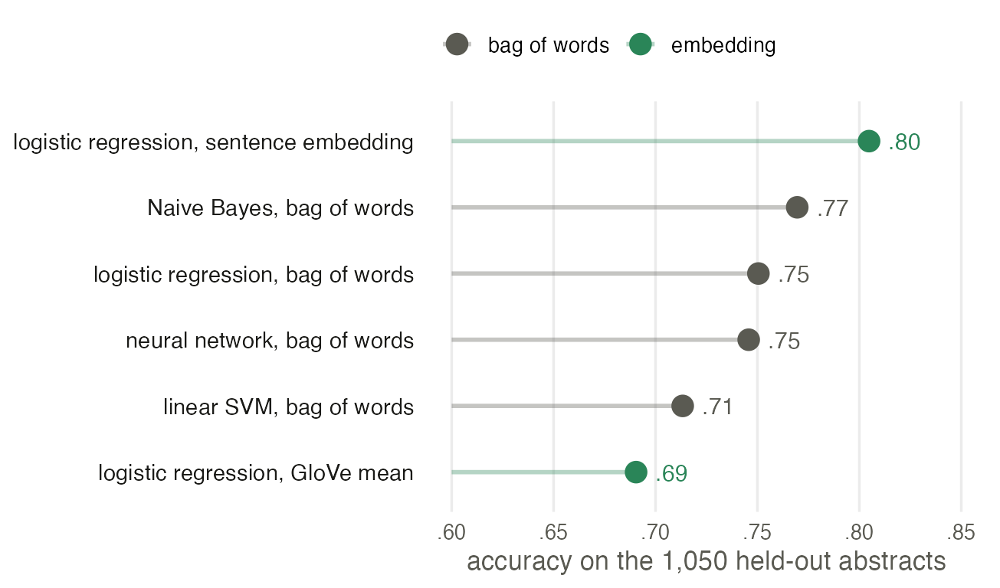
Tuning: nobody knows the right settings
splitrecipemodelworkflowfitpredictevaluate
nn_tune <- mlp(hidden_units = tune(), # "decide this by trying"
penalty = tune(),
epochs = tune(),
learn_rate = tune()) |>
set_engine("brulee") |> set_mode("classification")
nn_tune_wf <- workflow() |>
add_recipe(rec_norm) |> add_model(nn_tune)
grid <- crossing(hidden_units = c(2, 4, 8, 16, 32, 64, 128),
penalty = c(.0001, .001, .01, .03, .1, .3, 1),
epochs = c(5, 100),
learn_rate = c(.001, .01, .1))
folds <- vfold_cv(train_data, v = 5, strata = label) # never the test set
nn_results <- tune_grid(nn_tune_wf, resamples = folds, grid = grid,
metrics = metric_set(accuracy))- Hidden units, penalty, epochs, learning rate: every value so far was a guess
- A grid search tries the combinations systematically: 294 here, each scored by five-fold cross-validation inside the training set
- That makes 1,470 fits, which took ten minutes on twenty processor cores
The test set is not touched. Choosing settings on it would be Part II’s leak.
Tuning: what the grid says
- The penalty matters most: too little .72, about right .75, too much .65
- Too little training also hurts: at the smallest learning rate, five epochs can stay at chance (.33)
- Hidden units hardly matter, and the top settings all sit near .75
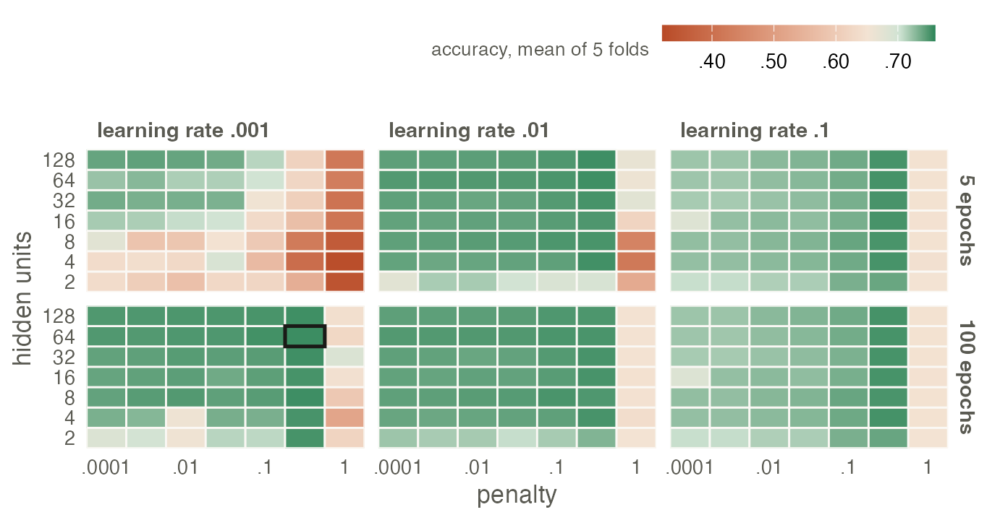
Chosen on the training folds, then refitted and scored once on the test set: .77, against .75 for the first guess.
What moves the score
- The task: sentiment in tweets is harder than discipline in abstracts, whatever the model
- The amount of labelled data: more hand-coding beats a cleverer algorithm, nearly always
- The representation: counts, n-grams, word vectors, sentence vectors; the largest lever today
- Preprocessing: stop words, stemming, trimming; small effects, and not always in the direction you expect
- The algorithm: on a bag of words, a point or two between reasonable choices
- Tuning: a point or two, on folds and not on the test set
Items 1 and 2 are decided before any code runs. That is what the sketch at the start of every lab is for.
Barberá, P., Boydstun, A. E., Linn, S., McMahon, R., & Nagler, J. (2021). Automated text classification of news articles: A practical guide. Political Analysis, 29(1), 19–42. https://doi.org/10.1017/pan.2020.8
VI · Weeks 1 to 3 in one table
Where every method lands
| Approach | Accuracy | Krippendorff’s α | Week |
|---|---|---|---|
| Manual coding, single coder | .82 | .82 | 2 |
| Manual coding, majority of three | .88 | .90 | 2 |
| Crowd coding, majority of five | .77 | .81 | 2 |
| Machine learning, CNN | .63 | .50 | 3 |
| Machine learning, SVM | .57 | .41 | 3 |
| Machine learning, Naive Bayes | .58 | .39 | 3 |
| Dictionaries, best of fourteen | .46 | .34 | 2 |
| Dictionaries, worst of fourteen | .41 | .05 | 2 |
Classifiers beat every dictionary and reach no human. Next week adds a row.
van Atteveldt, W., van der Velden, M. A. C. G., & Boukes, M. (2021). The validity of sentiment analysis: Comparing manual annotation, crowd-coding, dictionary approaches, and machine learning algorithms. Communication Methods and Measures, 15(2), 121–140. https://doi.org/10.1080/19312458.2020.1869198 — Table 2.
What you can now do
- Say what a classifier needs that a dictionary does not
- Explain overfitting, and why the test set is held back
- Write a workflow: split, recipe, model, workflow, fit, predict, evaluate
- Read a three-class confusion matrix, macro and per class
- Describe a unit, a hidden layer, the loss and backpropagation
- Say what an embedding is and what it changes for a classifier
Every score this week was produced the way last week’s were: new instruments, the same kind of gold standard.
This week
- Tuesday · Lab A: one workflow, three algorithms, one test set; then try to beat van Atteveldt et al.
- Thursday · Lab B: neighbours, analogies, and embeddings instead of word counts for the same classifier
- Sunday · homework 3: a classifier for New Year’s resolution tweets, on word counts and on embeddings; started in Lab B
- Playground: Let the data write the dictionary and How much freedom is too much before Tuesday; Where words live before Thursday
- Reading: Barberá et al. (2021); Hvitfeldt & Silge (2021), chapters 6–7; van Atteveldt et al. (2021), the machine learning section
Only a score on unseen texts tells you how the model will do. Keep the test set clean.
Questions?
If anything is unclear, ask now, or on Tuesday with a keyboard in front of you.